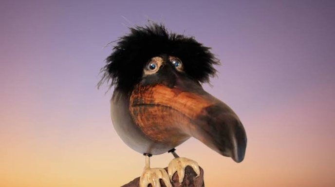
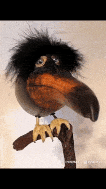
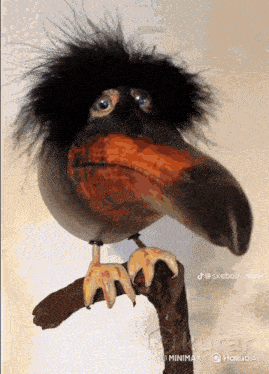

Брейнрот птица
СКЕБОБ
Многие до сих пор не знают или не понимают, что означает это птица и почему он стала мемом. Она выглядить странно, загадочно, страшно. Давайте разбираться кто такой скебоб и стоит ли его боятся.
Начнём с того, что Скебоб — персонаж-мем, сгенерированный нейросетью, изображающий странную птицу с крупным клювом, длинными руками-крыльями и слегка отрешённым выражением лица. Слева вы можете увидеть его. С скебобом делают много разного контента, как и мемы, так и видео.




Перед вами три анимированных изображения в формате GIF, посвящённых мему со скебобом. Это лишь один из многочисленных примеров подобного абсурдного юмора. Все три видео полностью сгенерированы нейросетью. В первом гиф-меме скебоб танцует, во втором скебоб выполняет зацеплер (вероятно, какой-то трюк или движение из игр), а на третьем скебоб сражается с персонажем из вселенной Roblox. Сразу хочу подчеркнуть и предупредить: во всех трёх этих мемах смысла нет абсолютно никакого. Ноль. Пустота. Это чистая, концентрированная абстракция, не поддающаяся логическому анализу и не предназначенная для поиска глубинного смысла. Они существуют вне привычных нам категорий юмора и реальности, являясь порождением цифрового бессознательного, где главенствуют случайные комбинации пикселей и причудливые алгоритмы генерации. Их цель — не рассмешить в привычном понимании, а вызвать когнитивный диссонанс, заставить зрителя зависнуть на мгновение перед экраном, осознавая всю тщетность попыток понять увиденное. Это искусство ради искусства, абсурд ради абсурда, возведённый в гиф-квадрат.
САМЫЕ ПОПУЛЯРНЫЕ МЕМЫ СО СКЕБОБОМ